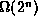

Data Structures and Algorithms
with Object-Oriented Design Patterns in Java
Data Structures and Algorithms
with Object-Oriented Design Patterns in Java
Since each of the elements of  is either a zero or a one,
there are possible values for X.
A brute-force algorithm to solve this problem
finds the best solution by enumerating all the possible values of X.
is either a zero or a one,
there are possible values for X.
A brute-force algorithm to solve this problem
finds the best solution by enumerating all the possible values of X.
For each possible value of X we check first if the constraint is satisfied. A value which satisfies the constraint is called a feasible solution . The solution to the problem is the feasible solution which minimizes which is called the objective function .
Since there are possible values of X the running time of a brute-force solution is . The running time needed to determine whether a possible value is a feasible solution is O(n) and the time required to evaluate the objective function is also O(n). Therefore, the running time of the brute-force algorithm is .
 Copyright © 1998 by Bruno R. Preiss, P.Eng. All rights reserved.
Copyright © 1998 by Bruno R. Preiss, P.Eng. All rights reserved.